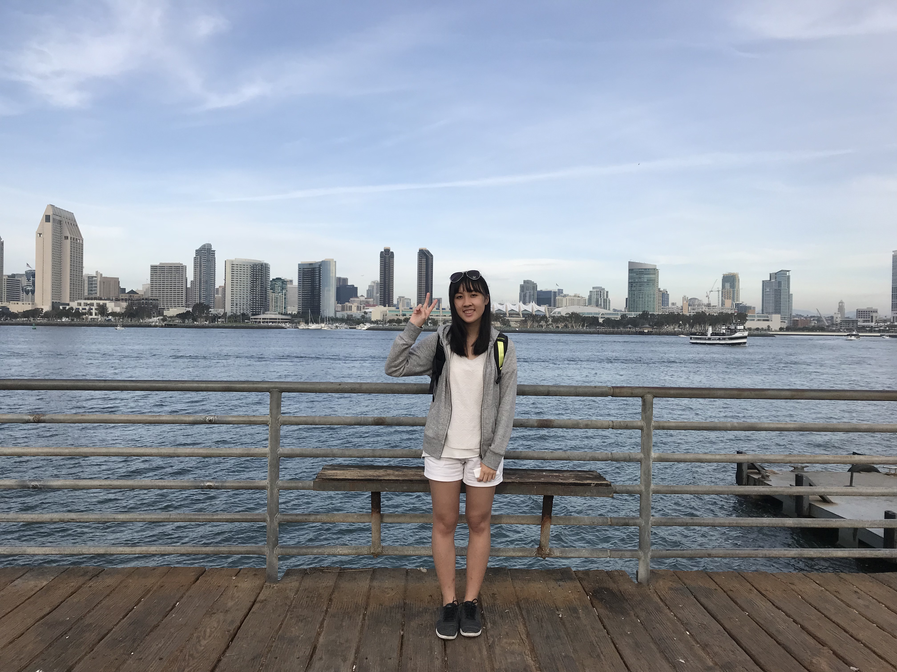
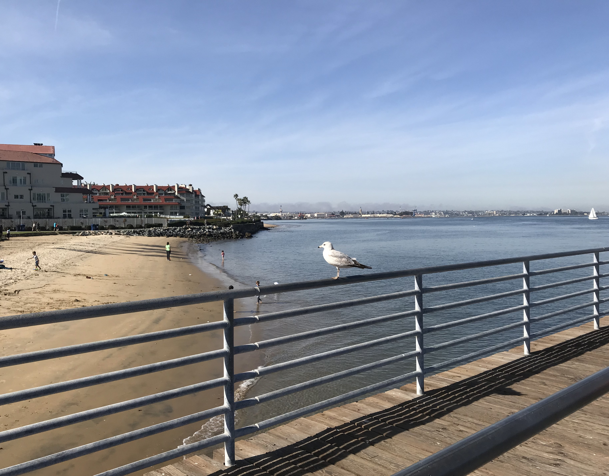
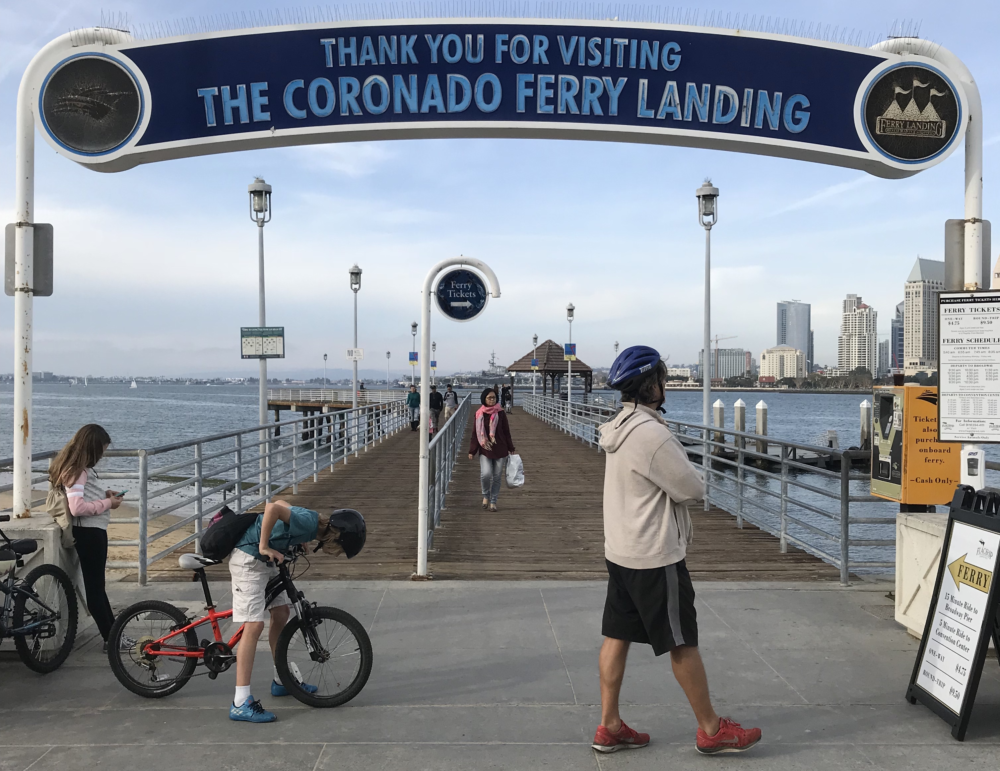
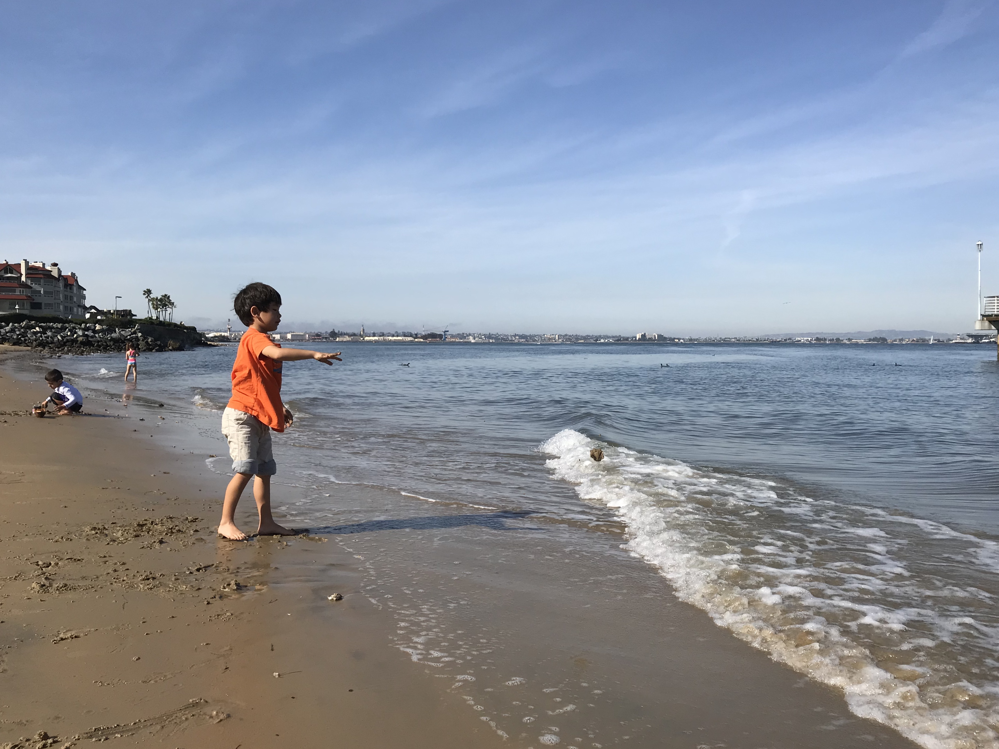
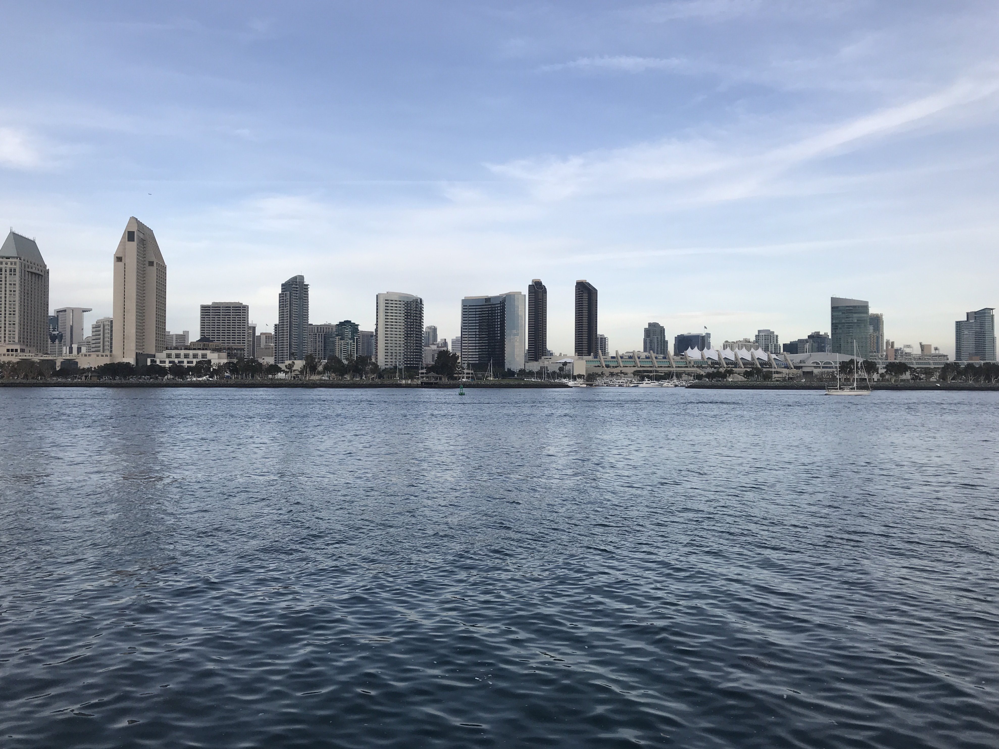

-
Coronado Island
January, 2018
Coronado island 是許多人非常喜愛的地方，和 downtown 隔著海灣相望，在 Coronado 能夠一覽聖地牙哥市中心的大樓美景，相當美麗。Coronado island 與 downtown 之間有橋連接，搭 Uber 過來非常快速方便，或是它們之間也有渡輪來往，搭 trolley 到 Seaport Village 後轉搭渡輪，大約一個小時後也能抵達。
到了 Coronado，當然要在海灘邊踩踩水，但因為是冬天的緣故，水幾乎是凍的XD 不過在沙灘上曬曬太陽，還是挺好的！
Uber 司機介紹了幾家不錯的餐廳，像是 C Level Lounger（跟一些我忘記名字的XD），但是在海邊 view 很好，有些餐廳價位自然比較高。在靠近渡輪搭船處的地方，我們選擇司機推薦的 Coronado Brewing Company 用午餐。我點了一份海鮮 pasta $17，再加上一杯 Orange Village beer (or something like that) $6，不過聖地牙哥以眾多的美食聞名，都來到這裡了偶爾還是要花點錢、吃點美食！這裡的份量都很大，吃不完的話可以 takeout，又多解決了窮困留學生的一餐XD 老闆推薦的 light beer 非常順口，把卡在杯緣的柳橙丟進去之後，可以嚐到柳橙和啤酒混合的味道，完全不會苦，非常好喝！同行的朋友點了 BBQ chicken pizza，同樣很好吃。
在 Coronado 簡單繞繞，我們搭上渡輪前往 downtown broadway。渡輪單程票價 $4.75，往 downtown 南北不同方向大約 30 分鐘一班。渡輪站下船後，就是有名的中途島博物館，往前走則有 Seaport Village，許多小店聚集，適合走過來閒逛。有家店專賣馬克杯，裡面的 Star Wars Mug 肯定讓星戰迷瘋狂！走沒多遠便有 trolley station，交通便利，搭上 15 分鐘一班的 trolley 後，大約 30 分鐘就能回到 SDSU。
Coronado Island
Coronado Island
Coronado Island
Coronado Island
Coronado Island